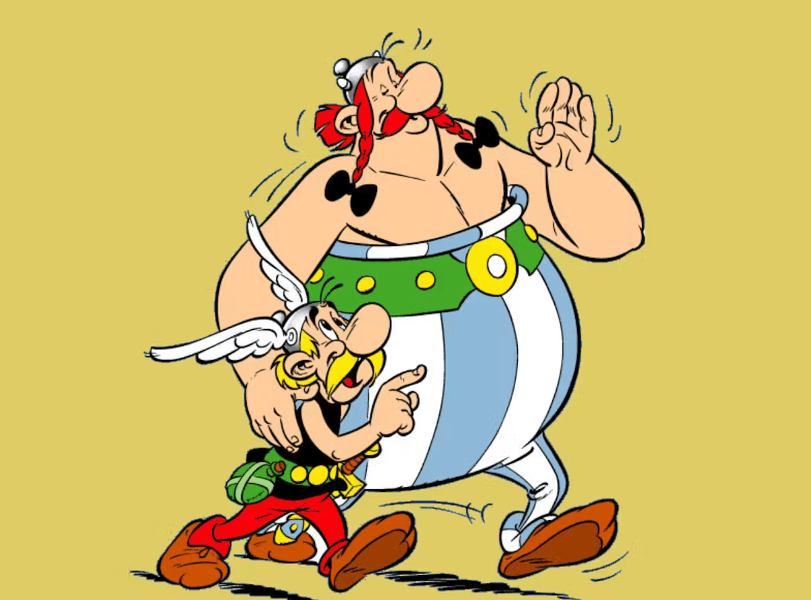
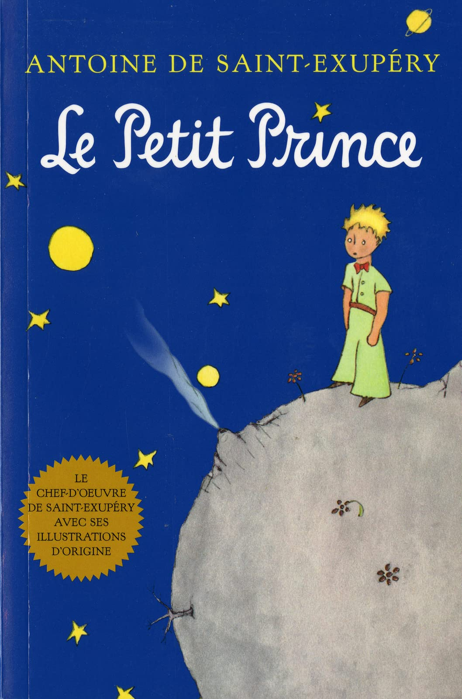

French A2 Literature
Books and Comics

Astérix, a smart and short with his best friend Obélix,
a pig-headed but extraordinarily strong (read to find why!),
and their adventures against Julius Caesar, who aims to invade
their humble Gaulish village. Funny, witty and heroic, this French-Belgian comic series is globally adored! Discover French humour, culture and history with ancient Gaul, France before the Roman invasion!
Characteristics: Clever wordplay, historical references, French humour, simple dialogue and visual comic support
Skills Improved: Reading, Cultural Awareness
Check out Astérix Films, TV Episodes, Netflix Shows and more with this youtube link! Use Google too!
Check out these resources as well, if you enjoyed Astérix!:

A timeless and famous philosophical tale about a young prince who travels from planet to planet, meeting strange and wise characters while reflecting on life, love, and human nature.
Characteristics: Metaphorical Storytelling, Simple and Accessible langiahe, Universal Themes, Critical Thinking, French Cultural and Philosophical Awareness
Skills Improved: Reading, Cultural Awareness
Check out these resources as well, if you enjoyed Le Petit Prince!:

A classic comic series following the adventures of Tintin, a young brave Belgian reporter who travels the world solving mysteries and uncovering conspiracies. Join Tintin and his faithful dog, Snowy, and Captain Haddock, the alcoholic, well meaning and brash captain in sailing the world and unraveling each and every day-to-day questions, to political ones!
Characteristics: Rich Vocab, Political and Cultural Satire, Visual Storytelling, and Complex Plotlines (for later issues)
Skills Improved: Reading, Cultural Awareness
Check out these resources as well, if you enjoyed Tintin!:
Did you know the Smurfs are originally a French-Belgian comic by Peyo! Check it out below!
What is the DELF? Not sure what your DELF level is? Click here to find out!
Tip! Use Collins' French-English Dictionary to refer to words you don't know!